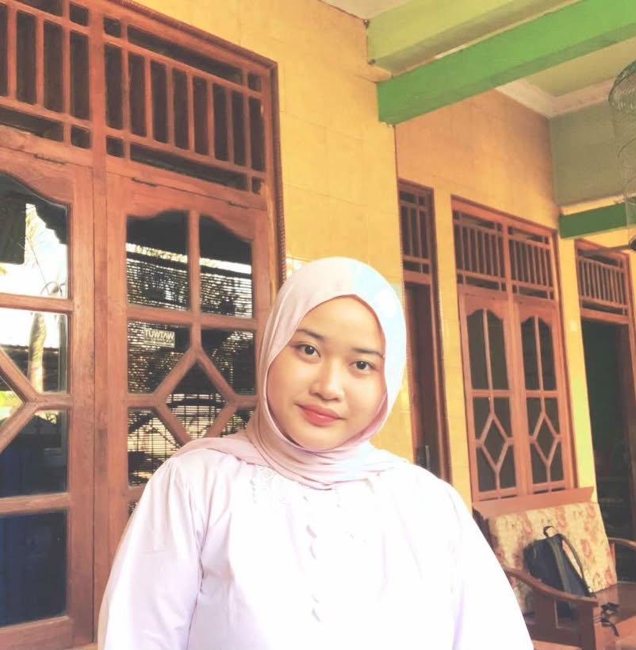

About Me

Hallo semua! Perkenalkan, nama saya Nadia Indah Santika. Saya lahir di Karanganyar, 29 Oktober 2006. Saat ini saya sedang menempuh pendidikan di Universitas Sebelas Maret (UNS), Program Studi Pendidikan Teknik Informatika dan Komputer (PTIK), dan sekarang saya sudah memasuki semester 3. Saya merupakan lulusan SMA Al Islam 1 Surakarta dari jurusan IPA Informatika. Selama menempuh pendidikan, saya mulai tertarik dengan dunia teknologi dan informatika. Saat memasuki semester 3 ini, saya ingin lebih mengeksplorasi berbagai bidang dalam teknologi informasi dan pendidikan untuk menemukan minat serta potensi yang ingin saya kembangkan lebih lanjut. Saya berharap selama perkuliahan dapat memperoleh pengalaman, meningkatkan keterampilan, dan menemukan bidang yang sesuai dengan ketertarikan saya. Selain itu, saya juga ingin terus belajar dan mengembangkan diri agar dapat menciptakan karya yang bermanfaat di masa depan.